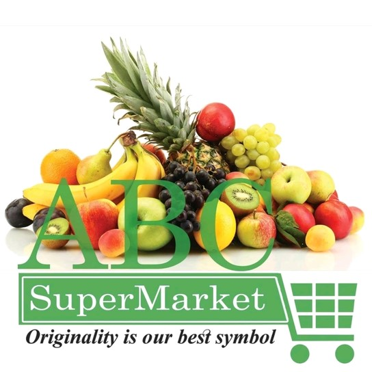
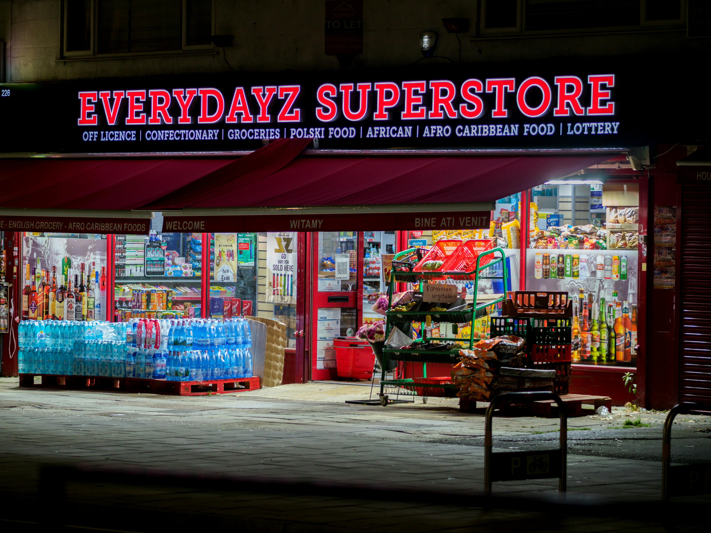

This project analyzes the sales performance of ABC Supermarket using a dataset of
1,000 transactions across three branches, focusing on sales trends, gross income, product sales,
and payment methods.

The Bike Sales Dashboard analyzes sales performance, customer demographics,
and inventory, highlighting trends, regional sales, and product categories to
optimize marketing and inventory strategies.

The Supestore Sales Analysis examines sales trends, product performance,
and customer demographics, providing insights to optimize inventory, marketing, and sales strategies.

This Analysis explores temperature, precipitation, and other weather patterns to identify trends
and provide insights for forecasting and decision-making.

This project examines a dataset of 428 vehicles to extract insights on attributes,
revealing trends and relationships in automotive performance and characteristics.